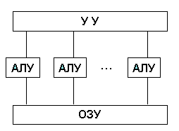

Архитектурой ПК (персонального компьютера) принято называть совокупность структуры, отражающей состав и обслуживающее ПО. Структурой называется комплекс функциональных систем ПК и их связующих элементов. Особенности архитектуры являются определяющими факторами при рассмотрении принципов действия ПК, программно-информационных связей и последовательности соединения всех узлов логики компьютера. К узлам логики относят: ОЗУ (оперативная память), ЦП (центральный процессор), внешнее устройство памяти (жесткий диск), графический модуль (видеокарта), периферийные модули. Основным, принципиальным элементом архитектуры любого ПК, являются блоки программного управления.
Группа ученых, в составе которой были американцы Г.Голдштейн, Дж. фон Нейман и А. Беркс, в 1946 году провели колоссальную работу по разработке новых принципов и архитектуры ЭВМ. Работа математиков легла в основу при создании компьютеров первого и второго поколений. Принципы фон Неймана были сохранены, хоть и существенно видоизменились, во время работ по созданию машин следующих поколений.
Основные принципы фон Неймана:
Интеграция методов двоичного счисления позволила упростить работу устройств и сделать ее выполнение гораздо быстрее, чем это было при использовании десятичной системы.
Программное управление ПК
Функционал ПК зависит от исправной работы программного обеспечения. Программа, управляющая компьютерной системой представляет собой набор последовательно исполняющихся команд. Проблема низких показателей быстродействия, актуальная для ранних ПК, была решена интеграцией модуля памяти, применяемого для записи программных данных. Кодированные в двоичной системе данные и командные коды, расположены в пронумерованных адресных блоках. Возможность быстрого доступа к адресной ячейки сделало возможной работу в переменных программных средах.
Условный переход при исполнении программы
По умолчанию программные компоненты имеют последовательную модель исполнения, но существует возможность реализации перехода к любому месту кода. Главным преимуществом подобного механизма стало превращение программного продукта из постоянной величины в изменяемую, аппаратная же часть осталась статичной и достаточно простой.
Фон Нейман предложил собственную структура персонального компьютера. В состав ПК предложенного математиком входили:
В данной модели ПК любой тип данных вводится в устройство запоминания опосредованно через АЛУ посредствам устройств ввода/вывода. Программные команды фиксируются последовательно в блоках памяти, тогда как обрабатываемые данные записываются в блоках произвольно.
Простейшая команда содержала в себе информацию об операции требующей выполнения и адресов памяти, хранящей данные требуемые для выполнения данной операции. Кроме этого в команде прописывались адреса блоков памяти доступных для сохранения результата выполнения команды. Арифметико-логическое устройство выводило обработанные данные в устройство запоминания или в выводное устройство. Существенным отличием систем подобного рода является форма данных удобная для сохранения и обработки, а также для восприятия человека при передачи на устройство вывода (печатающее устройство или монитор).
Устройство управление одного компьютера способно взаимодействовать с аналогичным компонентом другого ПК, получая и передавая информацию. Адрес первой команды ПК записывается в регистре УУ, регистрируясь счетчиком. После записи устройство управления осуществляет считывание памяти и перемещает содержимое заданной ячейки в командный регистр. Следующей операцией является определение командной операции и «выставление отметки» о ней в ячейке памяти, также регистрируются адреса и командные данные. В ходе текущих операций происходит контроль выполняемой команды.
Выполнение операции осуществляется аппаратная оснастка компьютера или АЛУ. По завершению выполнения команд значение счетчика увеличивается на единицу, что является сигналом для запуска следующей команды. При необходимости запуска команд без стандартной очередности, запускается команда переадресации, содержащая целевой адрес ячейки запуска управляющей команды.
Современные компьютеры имеют магистрально-модульный тип архитектуры, то есть состоят из относительно самостоятельных компонентов, связанных между собой через ЦП.
Принцип модульности позволяет осуществлять произвольную комплектацию ПК устанавливая совместимые компоненты. Кроме этого современные ПК имеют возможность модернизации и улучшения. В данной системе функционирует магистральный тип обмена информацией. Для обеспечения взаимосвязи компонентов ПК используется магистральная шина, располагаемая на материнской плате в виде печатной платы. Преимуществом подобного вида ПК является возможность добавления или замены комплектующих.
Благодаря принципиальным переменам в архитектуре ПК произошло значительное повышение скорости обработки и обмена информации. Считываемая информация хранится в системной памяти, что позволяет работать напрямую с ЦП и значительно ускоряет работу ПК в целом. Максимум быстродействия ограничен скоростью обработки данных самой магистрали, чем выше данный показатель, тем выше скорость работы ПК в целом.
Для решения вопроса предпринято следующее:
Существуют компьютеры с несколькими процессорами, работающими параллельно. Такие ПК называются многопроцессорными и используются при необходимости обработать очень большой объем информации за максимально короткое время.
В отличие от многопроцессорных ПК, имеющих единый канал оперативной памяти, в многомашинных ПК, каждому процессору доступен свой блок ОЗУ. Эффективность подобных систем проявляется при выполнении сложных задач, требующих работы специальной структуры с тем количеством ПК, сколько подзадач необходимо выполнить. Комплексы с несколькими процессорами или многомашинные системы значительно отличаются от «обычных» ПК по показателю быстродействия.
Подобная система работает под управлением одного УУ, взаимодействующего с несколькими АЛУ. Подобный принцип позволяет обрабатывать большой объем информации в одном потоке. Актуален данный принцип только при выполнении однотипных задач с различным набором данных (Рисунок 1).
Рисунок 1 - Архитектура с параллельным процессором
В настоящее время встречаются более сложные архитектурные решения, а также вариации ПК, в которых применяется несколько классических архитектурных принципов.